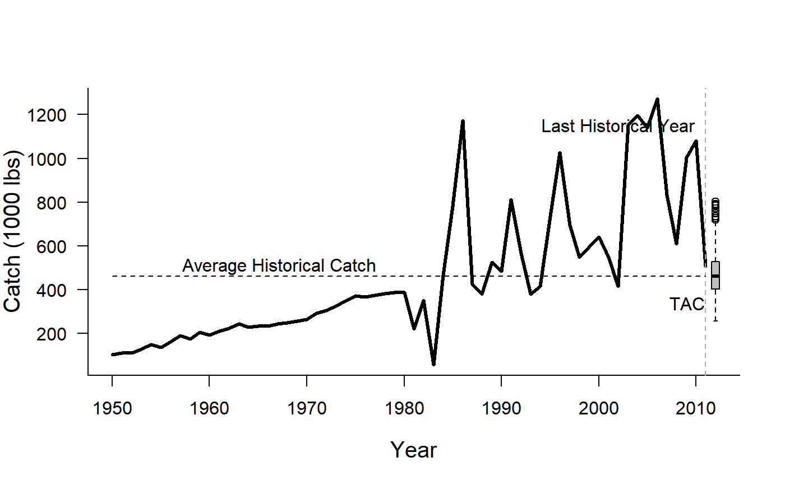

AvC.RdA simple average catch MP that is included to demonstrate a 'status quo' management option
AvC(x, Data, reps = 100, plot = FALSE)
| x | A position in a data-limited methods data object |
|---|---|
| Data | A data-limited methods data object |
| reps | The number of stochastic samples of the TAC recommendation |
| plot | Logical. Show the plot? |
An object of class Rec with the TAC slot populated with a numeric vector of length reps
The average catch method is very simple. The mean historical catch is calculated and used to set
a constant catch limit (TAC). If reps > 1 then the reps samples are drawn from a log-normal
distribution with mean TAC and standard deviation (in log-space) of 0.2.
For completeness, the TAC is calculated by:
$$\text{TAC} =\frac{\sum_{y=1}^{\text{n}}{C_y}}{\text{n}}$$ where \(\text{TAC}\) is the the mean catch recommendation, \(n\) is the number of historical years, and \(C_y\) is the catch in historical year \(y\)
See the online documentation for correctly rendered equations.
Other Average Catch MPs: DAAC
Data <- DLMtool::Cobia # Apply the AvC MP to the Data Rec <- AvC(1, Data, reps=1000, plot=TRUE) # 1,000 log-normal samples with CV = 0.2